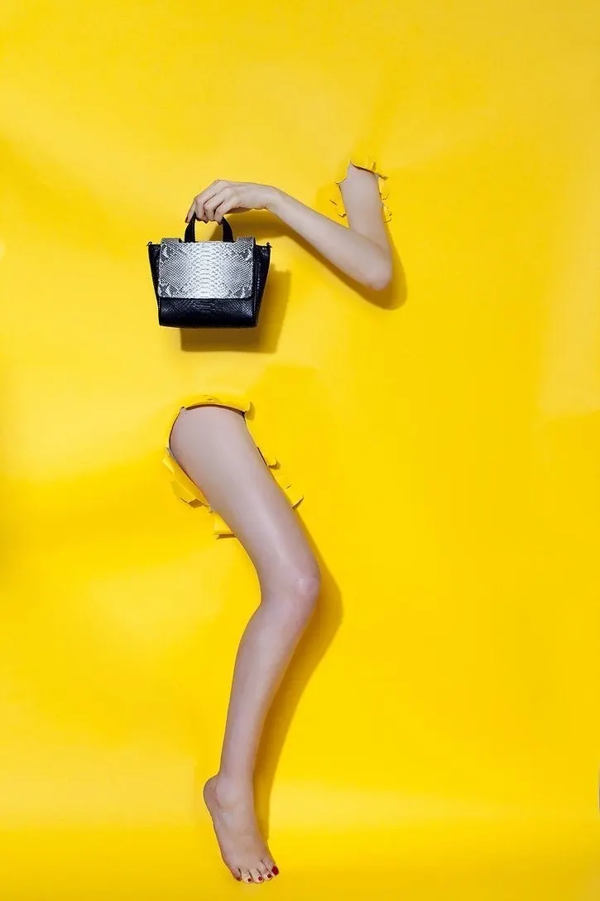

Vaqueta curtida al vegetal · 20 piezas por modelo
Armado visible, sin forro
Curtido vegetal
Herraje macizo
20 piezas por modelo
(01) El taller
Patronaje propio, costura a mano y nueve días por pieza. El límite no es una postura: es lo que tarda hacerlo así.
